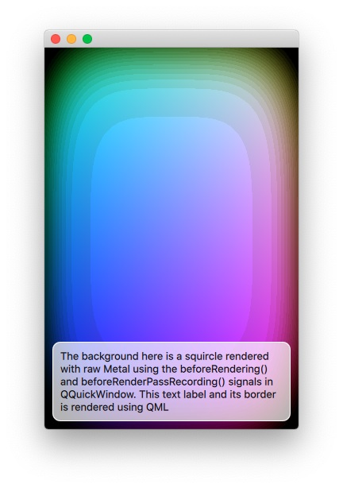

Scene Graph - Metal Under QML
Shows how to render directly with Metal under a Qt Quick scene.

The Metal Under QML example shows how an application can make use of the QQuickWindow::beforeRendering() and QQuickWindow::beforeRenderPassRecording() signals to draw custom Metal content under a Qt Quick scene. This signal is emitted at the start of every frame, before the scene graph starts its rendering, thus any Metal draw calls that are made as a response to this signal, will stack under the Qt Quick items. There are two signals, because the custom Metal commands are recorded onto the same command buffer with the same render command encoder that the scene graph uses. beforeRendering() on its own is not sufficient for this because it gets emitted at the start of the frame, before having an MTLRenderCommandEncoder available. By also connecting to beforeRenderPassRecording(), the application can gain access to the necessary native objects.
As an alternative, applications that wish to render Metal content on top of the Qt Quick scene, can do so by connecting to the QQuickWindow::afterRendering() and QQuickWindow::afterRenderPassRecording() signals.
In this example, we will also see how it is possible to have values that are exposed to QML which affect the Metal rendering. We animate the threshold value using a NumberAnimation in the QML file and this value is used by the Metal shader program that draws the squircles.
The example is equivalent in most ways to the OpenGL Under QML, Direct3D 11 Under QML, and Vulkan Under QML examples, they all render the same custom content, just via different native APIs.